Check out my
other Posts!
My Favorite Projects
Here are some of my favorite projects I've worked on
AzureHunt - Writeup
Dec 2, 2025 | Cyberdefenders AzureHunt Lab Walkthrough
Introduction
Today, we are going to be looking at AzyreGybt. A cyberdefense lab published by Cyberdefenders.
If you haven't tried out Cyberdefenders,
I highly recommend you check them out! It's a great way to get more acquainted with the defensive side of cybersecurity. Especially if you're used to working primarily on offensive security.
This lab utilizes a Elastic instance that contains Azure AD, Activity, and Blob Storage logs. The goal of the lab is to use these logs to reconstruct an attack timeline, identifying initial access, lateral movement, persistence, and data exfiltration.
Please hover over any words highlighted in purple to get a description of what they mean!
Scenario
A finance company's Azure environment has flagged multiple failed login attempts from an unfamiliar geographic location, followed by a successful authentication. Shortly after, logs indicate access to sensitive Blob Storage files and a virtual machine start action. Investigate authentication logs, storage access patterns, and VM activity to determine the scope of the compromise.
Analysis
Going into this lab, I had never utilized elastic. From one learner to another, something I came to rely upon when navigating this new environment is the field search on the left side of the screen:
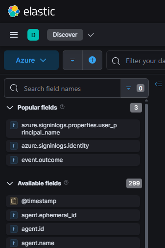It helps a lot when you don't know exactly what fields you're supposed to be searching for or where to even start. Play around with plugging in some keywords for what you're looking for and see what fields you can find!
Q1: As a US-based company, the security team has observed significant suspicious activity from an unusual country. What is the name of the country from which the attack originated?
Lets start by using the context of the question to help in finding our first answer. When you first open our elastic instance you'll notice we have a total of 348 logs.
The question informs us that we are a US based company and that we're looking to find the name of the country that the attack originated from. Knowing this we can go over to the field search bar and see if we can find any fields related to "country".
A quick search shows that we have 4 options, among these options is geo.country_name and source.geo.country_name. Since we want to know where the attack originated from, lets look at the respective source field.
In order to narrow down our available logs, we can either utilize the query bar using KQL syntax or the blue plus symbol next to it to create a filter. I personally like to put any filters I want to stay consitent throughout my queries in filter section and any filters I'm testing within the query bar.
Additionally, we can utilize Kibana's Visualize Library which you can access from the three horizontal bars in the top left and add the field we found earlier to get a representation of what other countries have logs.

From what we can see above we can see that outside of a few france logs everything originated from Germany which gives our answer to question 1.
Q2: To establish an accurate incident timeline, what is the timestamp of the initial activity originating from the country?
Now that we know which country the attack originated from they want us to identify the timestamp when we first saw activity from the country.
To do this, we change our filter to only look for the source geo country that is equal to germany: source.geo.country_name.keyword: Germany.
Then we can click on @timestamp and sort by Old-New. That way we can see the oldest activity we have logged.
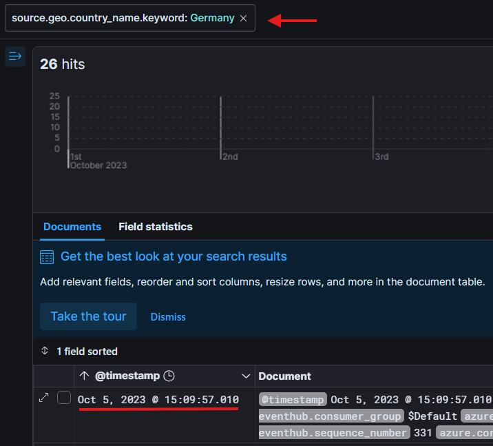Looking at the oldest log we have, under the timestamp field we can see our answer to question 2!
Q3: To assess the scope of compromise, we must determine the attacker's entry point. What is the display name of the compromised user account?
Now we need to determine the name of account the attacker used to as an entry point.
From our previous question if you're following along, you can now see that we are left with only 26 logs. Not a crazy amont if we wanted to go through them manually, but if we wanted to save some time we could also sort by:
azure.signinlogs.operation_name: Sign-in activity.
This will cut our shown logs in half. Next, we can take a look at the first event coming from Germany, we see that the identity tied to the signinlogs is Alice. Giving us the answer to question 3!
Q4: To gain insights into the attacker's tactics and enumeration strategy, what is the name of the script file the attacker accessed within blob storage?
This question requires us to begin looking into logs related to blob storage. In order to filter for these logs we can use the filter:
azure-eventhub.eventhub: bloblogs
This will give us around 140 logs back that are related to blob storage. The next thing I needed to figure out what what kind of blob operation name related to accessing a blob storage as per the question.
This ended up being a lot of trial and error into looking at a bunch of logs and seeing what changes between each of them but ultimately I found that if we add this filter:
azure.eventhub.operationName: GetBlob
With this additional filter we are now left with 4 logs which are easy to go through and manually identify the script file the attacker attempted to access. Lets take a look at the first listed log below.
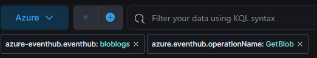 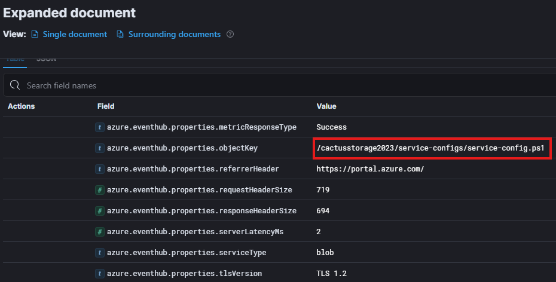Looking at the objectKey field we can see there is a PowerShell (.PS1) script file listed. Giving us our answer to question 4.
Q5: For a detailed analysis of the attacker's actions, what is the name of the storage account housing the script file?
Going off of the same log we were looking at for the previous question. We can identify the name of the storage account that is housing the script.
You can identify it from a number of places, such as the root of the objectKey, azure.resource.name, and specifically the azure.eventhub.properties.accountName. Any of these three fields would give us the answer to question 5!
Q6: Tracing the attacker's movements across our infrastructure, what is the User Principal Name (UPN) of the second user account the attacker compromised?
Based on the question we know we're done looking at Blob Storage for the moment. If we apply our previous filter to only see Germany logs we can begin to look for another user whose account was compromised.
Utilizing the same structure as before I sorted the logs by Old-New and then setup a filter to not show logs where the azure.signinlogs.identity was set to Alice (The name of the first account that was compromised).
Taking a look at the first log that was returned, we can take a look at the identity and it shows as IT Admin giving us the name of the second user account compromised.
However we're not done yet, we need to find the User Principal Name (UPN) for the user. We can go through more of the log until we come across the field: azure.signinlogs.properties.user_prinicpal_name giving us the answer to question 6!
 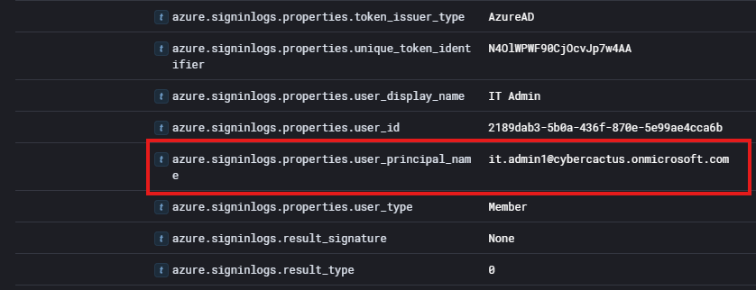
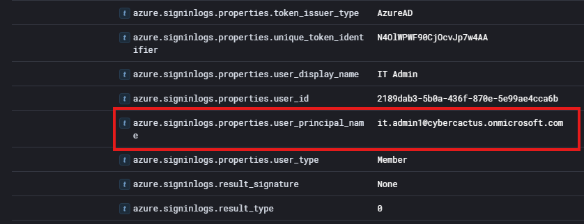
Q7: Analyzing the attacker's impact on our environment, what is the name of the Virtual Machine (VM) the attacker started?
Now we need to identify activity around the attacker starting up a Virtual Machine. Without any knowledge of how virtual machine fields are labeled in elastic I simply put "virtual" into the query bar and got back 7 logs surrounding resources being allocated, deallocated, and VMs being started!
After playing around with different filters as well, it seems you can look at any log involving VMs by using the following filter:
azure.resource.provider: MICROSOFT.COMPUTE/VIRTUALMACHINES
As we can see above, we can identify the name of the VM that was launched. Giving us the answer to question 7!
Q8: To assess the potential data exposure, what is the name of the database exported?
We can take a very similar approach to finding logs related to the database as we did with Q7. I started off by looking for any keywords surrounding: database and SQL but didn't find any logs that provided what we were looking for.
Next I used some more context for the question and searched for export within our query. This returns 2 logs that contain the field:
azure.activitylogs.operation_name: MICROSOFT.SQL/SERVERS/DATABASES/EXPORT/ACTION
We can look further into this log to try and identify the name of the database that was exported:
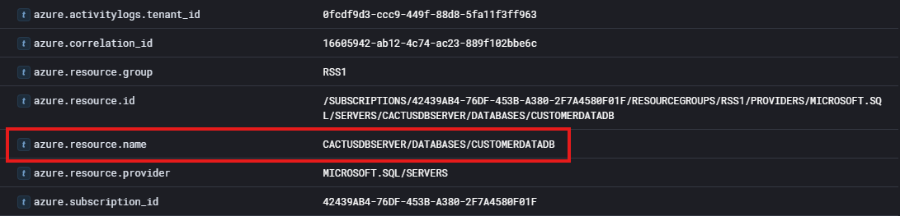As we can see above, this log will provide us with the name of the database. Giving us the answer to question 8!
Q9: In your pursuit of uncovering persistence techniques, what is the display name associated with the user account you have discovered?
Now we are looking for some form of a persistent technique used by the attacker associated with a user account. Using context clues, I assumed this has to do with creating a user.
However, I couldn't determine the name of the field that would be used to check for adding a user. Going back to the Visual Library I added a field to display fields related to display_names. That resulted in this graph:
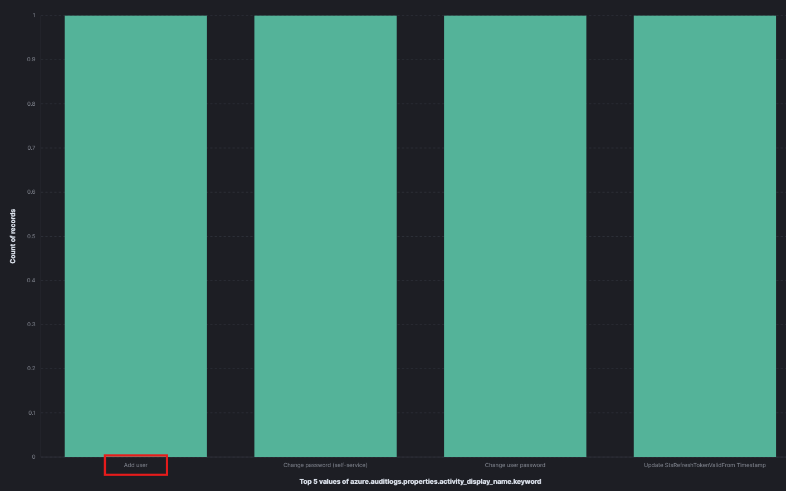From the graph I noticed that there was a property equal to "Add User" so I went back to Discover and searched with the following query:
azure.auditlogs.properties.activity_display_name.keyword: Add user
This resulted in a log that gave us the user that was created by our attacker.
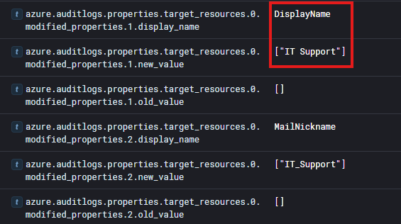From this image we can determine the display name of the user account that was created. Giving us the answer to question 9!
Q10: The attacker utilized a compromised account to assign a new role. What role was granted?
This question requires that we find the role that was assigned by a compromised account.
In order to try and identify where we may be able to see roles within a log I searched for any fields involving role.
This led me to finding the field:
azure.activitylogs.identity.authoization.evidence.role
From clicking on the field name elastic will perform a quick enumeration of the logs and gather what this field was set to. There I noticed that there was the roles user and owner.
So I then filtered the logs by that field including the value of Owner and it gave us two logs. These logs showed our compromised user account IT Admin assigning the role of Owner.
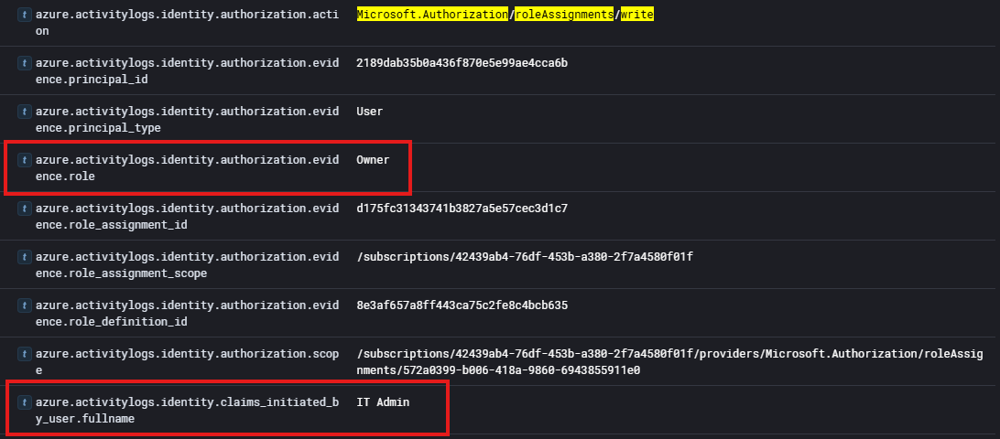As we can see in the image we have the name of the role assigned, the user that did it, and the action type being defined as a role assignment. Giving us the answer to question 10!
Q11: For a comprehensive timeline and understanding of the breach progression, What is the timestamp of the first successful login recorded for this user account?
Wrapping up this analysis, we are tasked with determing the timestamp of the first successful login of the attacker created user account.
To obtain this, we can do a filter for our user account. I used this filter: user.name.keyword: it_support
If we then sort by Old-New and look at the first log we can see that it relates to a successful logon attempt, giving us our answer to question 11 and completing this lab!
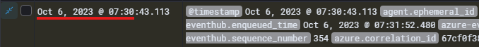 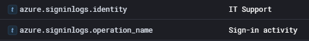Conclusion
You have now successfully completed the Cyberdefenders AzureHunt lab!
I hope this Writeup was able to teach out something or atleast give you another way to approach solving labs where you're not sure where to start.
I know at the start this lab gave me a lot of trouble. Working with new applications you're not used to can be daunting! Always try your best to be patient and leave room for curiosity and I'm sure there's nothing you can't figure out!
So please take care, take some time to learn something new, and happy game hacking!
NitoTech
Additional Resources:
Want to learn more about Elastic?Cyberdefenders Official AzureHunt Walkthrough
AzureHunt Lab